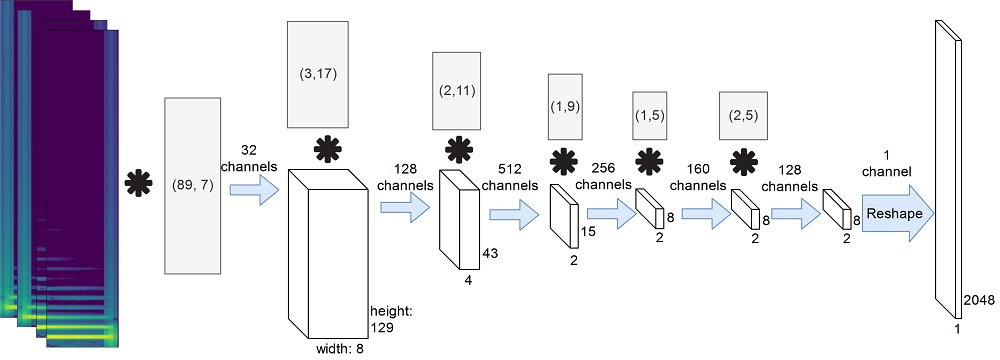
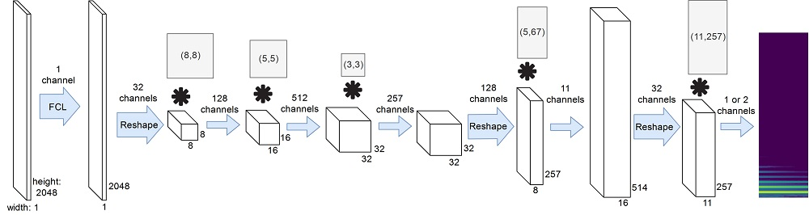

We studied the ability of deep neural networks (DNNs) to restore missing audio content based on its context. We focused on gaps in the range of tens of milliseconds, a condition which has not received much attention yet. The proposed DNN structure was trained on audio signals containing music and musical instruments, separately, with 64-ms long gaps. The input to the DNN was the context, i.e., the signal surrounding the gap, transformed into time-frequency (TF) coefficients. Two networks were analyzed, a DNN with complex-valued TF coefficient output and another one producing magnitude TF coefficient output, both based on the same network architecture. We found significant differences in the inpainting results between the two DNNs. In particular, we discuss the observation that the complex-valued DNN fails to produce reliable results outside the low frequency range. We demonstrated a generally good usability of the proposed DNN structure for generating complex audio signals like music.
Encoder architecture:

Decoder architecture:

Now we introduce sound examples generated with the network. They are divided into three classes according to our perception of them. These are: good, noisy and faded. The faded class presents samples where we hear as if the algorithm did a fade-in and fade-out on the gap.